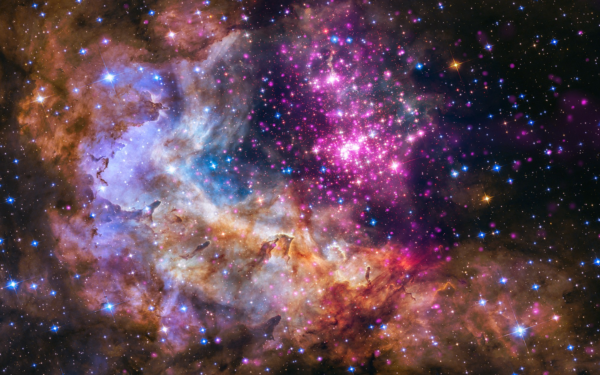
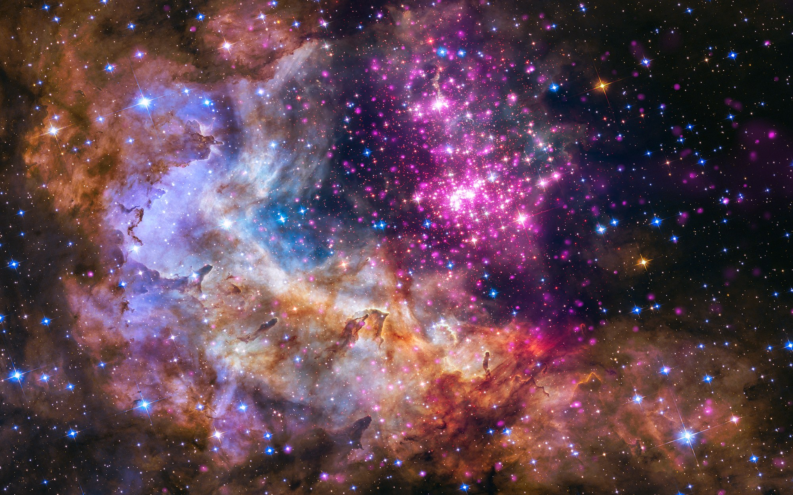

Laws of Physics in Space Laws of Physics in Space
Laws of Physics in Space Laws of Physics in Space 


 

Although there is often a misconception of how spacecraft get into
space and go to different celestial bodies, the logic behind movement
and energy are all referenced from Newton’s law of motion. The very
first step is launching the spacecraft to space, and this is an example
of Newton’s third law of motion. When it releases fuel and energy from
its engine, the energy pushes back from the ground to propel the rocket
upwards. Once the mass passes through the atmosphere, there are no external
forces acting on the rocket, since space is merely a vacuum. There are
no air resistance, gravity, or applied force in its current state, so
it travels in constant speed since all of the forces are at equilibrium.
It stays in the same speed and direction, or velocity. This is showcasing
Newton’s first law, that an object in motion stays in motion unless acted
upon by an unbalanced force. Then, when the spacecrafts leave Earth’s
atmosphere, they are in Earth’s orbit around the Sun. Space programs plan
beforehand the time their craft would leave Earth, as it is targeting a
moving body. To do this, they take into consideration the speed and length
of Earth as well as the targeted body’s orbit. This exemplifies the force
of gravity and its impact in the velocity of spacecrafts, as orbits play a
major role in the spacecrafts’ movement.
Changing paths to different orbits require the same force that was needed
for the launching of the spacecraft. To perform this, space programs fire
their engine to the opposite direction of where their targeted path is, so
that the energy released in the opposite direction creates enough result
force. Finally, if the mission was set for a celestial body with an atmosphere,
it would experience two forces. Atmospheric drag and gravity. As the spacecraft
enters the atmosphere, aerodynamic heating occurs, which creates intense heat.
By the force of gravity, the spacecraft experiences kinetic energy as it goes
through the atmosphere. However, spacecraft designs have made them capable
of entering atmospheres, through a blunt shape. The shape is used to gain
more drag or friction with the atmosphere, in which creates less heat, since
heat and drag are both inversely proportional. Then, the drag also contributes
to decreased speed of the spacecraft, which allows rockets and parachute to
function for the landing.
Physics is an area of study that is related to energy and matter,
and it highlights the fundamentals of movement in space and on Earth.
Energy and movement behaves differently in space compared to that
of Earth, in which includes the pattern of how light, sound, and
objects travel. Space program greatly rely on these concepts to
launch spacecrafts to different celestial bodies in the Solar System.
Of the well known laws of physics, Newton’s law of physics are
implemented more often than others in space physics.
Newton’s First Law: An object at rest stays at rest and an object
in motion stays in motion with the same speed and in the same
direction unless acted upon by an unbalanced force.
Newton’s Second Law: The acceleration of an object as produced
by a net force is directly proportional to the magnitude of the
net force, in the same direction as the net force, and inversely
proportional to the mass of the object.
Newton’s Third Law: For every action, there is an equal and
opposite reaction.
Hubble is a spacecraft still active today, and it is one of the most famous devices. Launched by NASA in April 24, 1990, it is the first major telescope to be placed outside of Earth’s atmosphere. It is constantly used to take pictures from far away galaxies, stars, and planets. The telescope is about 43 feet by 14, and its average speed is about 17,000 miles per hour. The hubble takes pictures by taking multiple of the same image with different color filters, and merging them to have a final image.
The Curiosity Rover is an instrumental device sent to Mars to find any possibilities that can support life. Having been active since August 5, 2012, it is equipped with 17 different cameras, each for different reasons, with a machine arm used to analyze data. It is capable of measuring quantity of radiation, x-ray, analysis, chemical components, etc.
In space, the main source of sound and pictures are from spacecrafts.
Sound:
Since sound travels through vibration and sound waves, it requires a medium, or substance of sufficient density. This allows the sound waves and molecules to bump against each other due to fast vibrations, which creates sound. However, in space, there is no medium for sound to travel, as space is just a vacuum. However, a famous NASA spacecraft, Voyager 1, have recorded sound from space. The reason behind this is mainly that there is actually a medium, or substance for sound waves to travel through. Due to the stars’ interstellar gas and dust in space, sound waves are able to utilize those to create a movement of energy. However, since the dust are more far apart than other mediums such as air or water, the sound waves travel at a much lower frequency. For example, sound waves have different frequencies, which contribute to higher or lower pitch. Since frequency is a result of the speed of oscillation of the sound wave as it travels through a medium, the interstellar gas and dust are very spread out, causing the waves to smaller frequencies, as the time of oscillation required for the sound wave to go through the medium is escalated. This means, sound can travel in space, but it becomes such a low frequency, that the sound merely become infrasounds.
Light/Picture:
However, light can travel through space. Light does not need a medium, so the light wave can travel through space and be seen. On the other hand, capturing the light from space to Earth also requires a new way of thought. To exemplify, Hubble brings the images back to Earth by taking an image of space, which it successfully does by taking multiple of the same images in different color filters. This allows the image to show variety of colors. Then it is recorded into pixels which show a variant of colors. Then, each pixel is translated into series of numbers. Since radio waves are a form of electromagnetic spectrum and can travel the longest distance, the Hubble transmits the series of numbers to Earth as a form of radio waves, which are then transformed back into the pixels through Earth’s computers. Therefore, the method is the idea of converting pixels to numbers, then converting them back into pixels.

https://www.nasa.gov/mission_pages/hubble/story/index.html
https://www.jpl.nasa.gov/missions/mars-science-laboratory-curiosity-rover-msl/
https://www.sciencealert.com/sound-can-travel-through-space-after-all-but-we-can-t-hear-it
Game Link